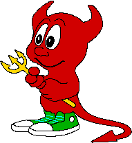
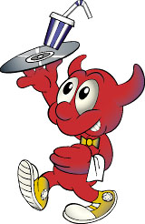

FreeBSD Kunst
Deze pagina bevat verschillende FreeBSD illustraties
.
Suggesties voor toevoegingen kunnen gemaild worden aan www@FreeBSD.org. Neem notitie
van het gebruiksbeleid voor deze illustraties.
BSD Daemon
|  | |||||
| Gemaakt door Poul-Henning Kamp Bron: /usr/share/examples/BSD_daemon/ op FreeBSD systemen. |
|||||
 |
 | ||||
 |
 |
 |
|||
Powered by FreeBSD
Logo's
 |
 |
|
 |
 |


Oude advertentiebanners
 |
 |
Grafisch gebruik
De bovenstaande Powered by FreeBSD
logo's kunnen gedownload worden en mogen
worden weergegeven op persoonlijke en zakelijke webpagina's die
worden geserveerd door FreeBSD machines. Voor het gebruik van
dit logo of de verschijning van de BSD Daemons met winstoogmerk
is toestemming nodig van Brian
Tao (maker van het power
logo) en Marshall Kirk McKusick
(houder van het copyright voor de afbeelding van de BSD
Daemon).
Poul-Henning Kamp's afbeelding van de BSD Daemon is uitgebracht onder THE
BEER-WARE LICENSE
. Zie de README
voor meer informatie.
Handelsmerken
De FreeBSD Foundation houdt
verschillende handelsmerken gerelateerd aan FreeBSD (waaronder het
handelsmerk voor de term FreeBSD
zelf). Lees voor meer informatie
over deze handelsmerken de
FreeBSD
Trademark Usage Terms and Conditions.